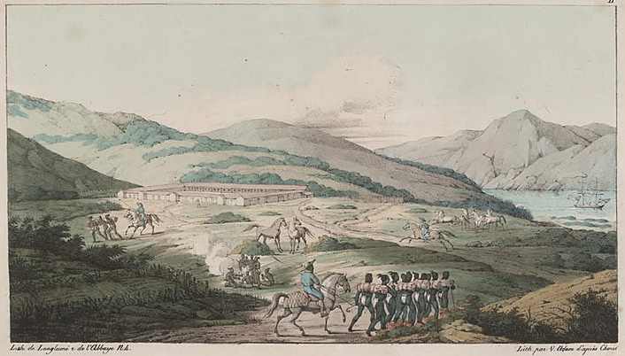
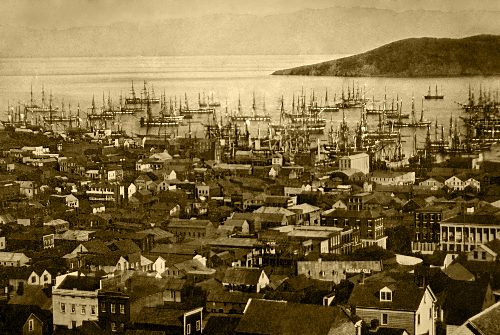
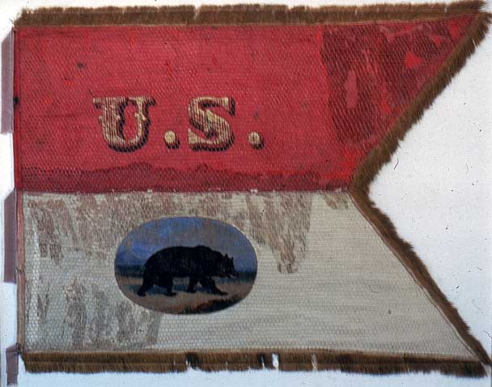

|
San Francisco is situated on one the finest natural harbors in the world. It began life as
a Spanish fort—or presidio—and then became the Mexican settlement of Yerba Buena.
The town grew slowly during this time, but then quickly emerged as the largest and most
commercially active metropolis on the West Coast of North America in the years following
the California Gold Rush of 1849.
Prior to the arrival of missionaries and Spanish explorers, thousands of Indians
resided along the California coastline. These Indians were divided into of dozens of small
bands, and while some forged alliances for practical purposes such as marriage and trade,
these bands were largely distinctive in language and culture. The Spanish simply called
them all costeños, or "people of the coast." The Indians referred to themselves as
the Ohlone.
In 1775 the San Carlos, a Spanish ship commanded by Juan Manuel de Ayala,
dropped anchor in San Francisco Bay—the first time Europeans visited the area. The next
|

San Francisco in 1822, when it was still a sleepy
little town in Mexican California
|
year, Jose Joaquin Moraga, a Spanish lieutenant, and Father Francisco Palou, a Franciscan
priest, established the Presidio of San Francisco as a frontier outpost at the mouth of
the bay. They also constructed a settlement called Mission San Francisco de Asís, named
for the founder of the Franciscan order. This was the first permanent structure in the
area.
In 1821, Mexico gained independence from Spain, and California became a territory of
Mexico with the Presidio of San Francisco the northernmost outpost of the new republic. In
1835, the town of Yerba Buena was established on the outskirts of the mission by the
Mexican government. A decade later, Californians—who resented the interference of the
distant Mexican government—challenged Mexican rule. Shortly thereafter, the United States
went to war with Mexico. The U.S. army seized control of Yerba Buena in 1847, and renamed
it San Francisco.
In the early weeks of 1848, a pair of events changed the course of San Francisco—and
United States—history. On February 2 of that year, American and Mexican authorities signed
the Treaty of Guadalupe Hidalgo, which ended the Mexican-American War. San Francisco was
ceded to the United States with the rest of California. Unbeknownst to these negotiators,
given the primitive communications technology of the day, workers building a mill for John
Sutter had discovered gold about 150 miles to the northeast of San Francisco a week
earlier. Within a year of the discovery of gold and the acquisition of California by the
United States, one of the most famous gold rushes in history was underway.
As a consequence of the gold rush, tens of thousands of people poured into San
Francisco. Most sought fortune in the gold fields, while others hoped to get rich
providing goods and services to miners. So strong was the lure of the gold fields that
hundreds of crews abandoned their ships, leaving an armada of deserted vessels along the
|

San Francisco at the height of the gold rush in 1851
|
city's shore. Between 1848 and 1849, the city's population swelled from less than 1,000
people to more than 25,000. Between 1850 and 1860, it more than doubled again, to 56,000
people. This process made San Francisco one of the most cosmopolitan metropolises in the
world, as the Gold Rush drew not only white and black Americans, but also Mexicans, South
Americans, Europeans, and Chinese. It was also a transient population, at least at
first—inhabitants left the city almost as rapidly as they came.
Among those who stayed were entrepreneurs like Italian immigrant Domenico Ghirardelli,
who established his eponymous chocolate company in 1852. German Jewish settler Levi
Strauss established a dry goods emporium in the city the following year; eventually he
would sell thousands of pairs of the blue jeans that bore his name. Four prominent
American businessmen—Leland Stanford, Mark Hopkins, Charles Crocker, and Collis
Huntington—also relocated to the city. The "Big Four" of California history, they owned
the state's most important railroad company—the Union Pacific—and helped build the
transcontinental railroad. The Big Four dominated California politics and business for
decades.
As the only significant metropolis in the vicinity of the mines, San Francisco became a
financial center, especially after the founding of Wells Fargo Bank in 1852 and the
establishment of a branch of the U.S. Mint in 1854. The money pouring into the city
contributed to the establishment of cultural and educational institutions, including the
California Academy of Sciences in 1853 and St. Ignatius Academy—later the University of
San Francisco—in 1854. On the downside, money and a transient population created the
conditions for widespread crime, leading to the establishment of Committees of Vigilance
in 1851 and 1856 to fight the epidemic of lawlessness.
Given the cosmopolitan nature of San Francisco, and the prevailing attitudes of the
day, racial tensions were all but inevitable. Mexican, black, and Chinese residents were
verbally harassed, physically assaulted, and sometimes even lynched. All were effectively
forced out of the mining trade in the 1850s, and were compelled to live in segregated
areas. Native Americans received even worse treatment. San Franciscans, fearful and angry
|

The flag of the 2nd Massachusetts Infantry, the only
unit from the eastern theater of the Civil War to include Californians
|
as a result of their past experiences with Indians, slaughtered the relatively peaceful
natives of the area with brutal efficiency. Hunting Indians was a popular sport, with
bounties for each kill paid by the state government. As a consequence, the 150,000 Indians
living in California in 1848 were reduced to 30,000 by 1860.
During the Civil War, San Francisco's residents were strongly pro-Union, often greeting
important victories with parades and rallies. Because the war was mostly fought thousands
of miles away, it was impractical for San Franciscans to serve as soldiers in the main
theaters of combat, and less than 100 did so. (Those who did volunteered en masse as the
"California battalion," which served as part of the 2nd Massachusetts Cavalry).
Consequently, San Franciscans' main contributions to the war effort took three forms:
1. Securing Southern California, home to a great number of Confederate sympathizers who
threatened to secede and join the Confederacy. This threat was effectively ended in
mid-1862, when several companies of Union troops—including many San Franciscans—were
stationed at Fort Tejon, on the outskirts of Los Angeles.
2. Serving in the Army of the West, which was tasked with controlling the region's
Native American population. Most notably, the 2nd Regiment California Volunteer Cavalry
and the 3rd Regiment California Volunteer Infantry engaged the Shoshoni Indians on January
29, 1863 in an engagement known now as the Bear River Massacre. 246 Natives were killed,
many of them unarmed and defenseless after having surrendered.
3. Donating money to the war effort, primarily for use in the medical care of Union
soldiers. One contemporary writer reported that, "On each steamer sailing out of the
Golden Gate two and three times a month, an average of over $1,000,000 in gold, during the
entire four years of the war, went East. Several times the specie shipments ran over
$2,000,000 per steamer, and on one occasion the report shows over $3,000,000 sent to help
win the war." It was also necessary for San Franciscans to defend these ships against
Confederate sympathizers who hoped to seize the treasure on board for the South. This
included a successful 1863 effort by the San Francisco police in which they foiled plans
to turn the schooner J. M. Chapman into a Confederate privateer.
As with most large cities in the Union, the long-term impact of the Civil War was to
spur the further development of San Francisco. During and after the conflict, San
Francisco continued to grow dramatically, thanks to the discovery of silver in the Nevada
Mountains in 1859 and the completion of the transcontinental railroad in 1869. The city
remained the commercial and cultural capital of the West Coast until being supplanted by
Los Angeles in the mid-twentieth century.
Source: Christopher Bates for the History 139A website.
|